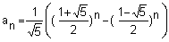

Fibonacci-Zahlen und Lucas-Zahlen
Leonardo von Pisa, genannt "Fibonacci" fand im Jahre 1202 die nach ihm benannte Folge beim Studium der Vermehrung von Kaninchen.
Die rekursive Darstellung der Folge lautet:
a1 = 1 , a2 = 1
an+2 = an+1 + an
Das folgende Formular berechnet die Zahlen gemäss dieser rekursiven Darstellung.
Dabei können Sie die ersten beiden ganzen Zahlen (Rekursionsanfang) beliebig festsetzen und
erhalten so sogenannte Lucas-Zahlen (nach Edouard Lucas, 1842 - 1891).
Die Fibonacci-Folge ist also ein Spezialfall einer Lucas-Folge.
| Erste Zahl | |
| Zweite Zahl | |
| Berechne die nächsten | Zahlen |
Die explizite Darstellung für die Fibonacci-Folge mit a1 = 1 und a2 = 1 heisst (nach Binet, 1843):
Daraus lässt sich die explizite Darstellung für eine Lucas-Folge (zwei beliebige Anfangszahlen) gewinnen. Das folgende Formular berechnet die n-te Zahl explizit (n < 1422).
| Erste Zahl | |
| Zweite Zahl | |
| Berechne die n = | -te Zahl |
Für die explizite Darstellung einer Lucas-Folge und den Zusammenhang mit dem Goldenen Schnitt: s. auch Puzzle 31 und die dazugehörige Lösung.